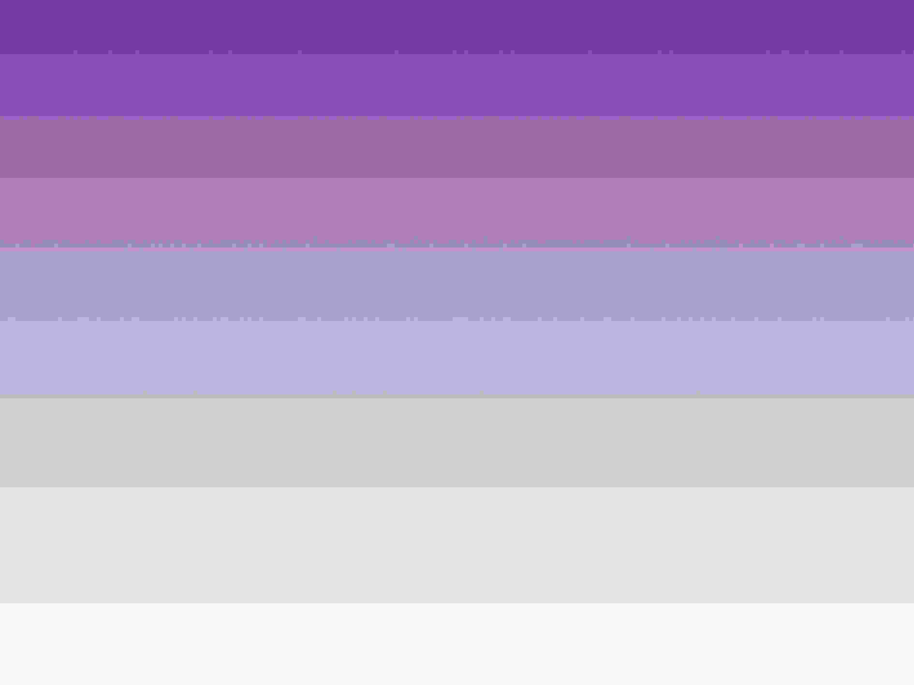

What is the most optimal format for this type of image and why? What
happens when we save it in JPEG format? If our website has a white
background, what format would be the most optimal and why?
The best
format for an image depends on how you will use it. If you need the image
to be clear and keep its quality, PNG is good. It's because PNG does not
lose quality when you save it. But, if you save an image as a JPEG, it
might not look as clear. This happens because JPEG makes the image file
smaller by reducing its quality. This can make the picture look a bit
blurry, especially where the colors change a lot. If your website has a
white background, using JPEG could be better because the file is smaller.
This means your website will load faster.